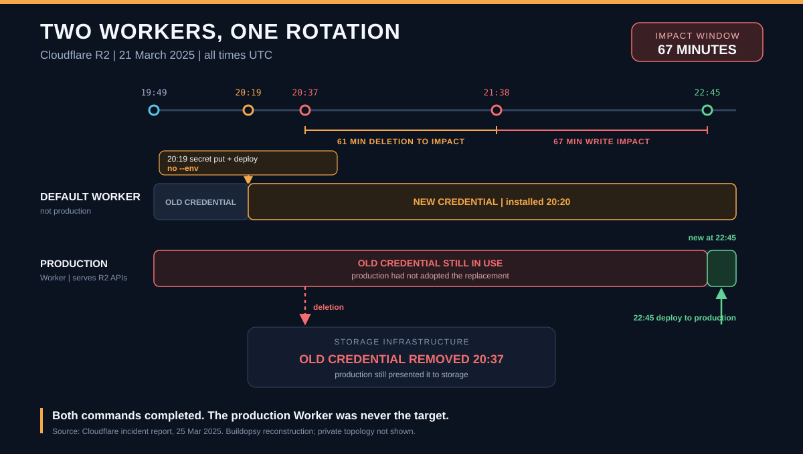

1. The rotation was valid. The deployment target was not.
Cloudflare's R2 team started the rotation at 19:49 UTC. The replacement credential ID and key pair were created while the old pair remained valid. That overlap was deliberate: it preserved a working authentication path while the new credential was introduced. Nothing in the report suggests the new credential was weak, malformed, or rejected as a key.
At 20:19, engineers ran wrangler secret put and wrangler deploy without --env. Both commands acted on the Worker in the default environment. Production was a different Worker. At 20:37, the old credentials were removed from storage to finish the rotation. The production Worker still had them.
The first customer-visible failures began at 21:38. They ended at 22:45 when the credentials were deployed to the correct production Worker. That is 67 minutes. The interval from old-credential removal at 20:37 to impact at 21:38 is 61 minutes. Both are arithmetic from published timestamps. Only the first is the published incident window; the second is not a measured credential lifetime.
2. The Worker is the credential boundary
Cloudflare describes R2 as three main parts: a production Gateway Worker that serves the S3, REST, and Workers APIs; a metadata service; and storage infrastructure that holds encrypted object data. The Gateway Worker authenticates to storage with a credential ID and key pair.
That credential belongs to a Worker environment, not to R2 as an abstract service. Cloudflare's Workers documentation says an environment effectively creates a separate Worker named <top-level-name>-<environment-name>. Secrets and environment variables are non-inheritable: the production Worker does not read the default Worker's configuration. A command that omits --env therefore has somewhere valid to write. It just may not be the place production runs.
Cloudflare's report describes the rotation as two configuration writes: install the secret with wrangler secret put, then set the new credential ID as an environment variable and deploy with wrangler deploy. Current documentation adds a detail that matters for anyone copying the sequence today: wrangler secret put creates a new Worker version and deploys it immediately. The report remains the authority for the commands used in March 2025 because Cloudflare does not publish the exact CLI version. Across both descriptions, the target rule is the same: a production rotation must name the production environment for every write that carries the credential.
The secret and the credential ID are separate values. The secret carries the key material; the credential ID is the identifier the Gateway presents to storage. A rotation is not complete when either one lands. It is complete when the production runtime is using the matching pair. That distinction is what made the failure quiet: each command completed against a real Worker, so the tooling did not report a missing target.
3. The missing evidence was adoption, not intent
The rotation had a safe overlap and a valid replacement. What it lacked was evidence that the production runtime had adopted the replacement before the old credential was deleted. Cloudflare's own post-incident analysis says the team should have explicitly validated which token the Gateway was using to authenticate with storage, rather than relying on availability metrics after updating the old set.
The table below reconstructs the credential state from the report's timeline and its environment model. Cloudflare does not publish internal configuration snapshots, so the state labels describe the intended and reported target, not a private dashboard.
| Stage | Default Worker | Production Worker | What was established |
|---|---|---|---|
| Before 20:19 | Old credential | Old credential | Replacement created; rollback path intact. |
| After 20:20 | New credential | Old credential | Commands completed against the default environment. Cloudflare believed production was updated. |
| After 20:37 | New credential | Old credential | Old credential removed from storage. No published pre-delete check tied the new ID to production. |
| 21:38–22:45 | New credential | Old credential | Storage rejected production authentication; writes failed completely. |
| After 22:45 | New credential | New credential | Correct production deploy; availability recovered. |
The old credential was the rollback path. Removing it before proving adoption turned a reversible configuration mistake into an outage. The later retry at 22:30 created another replacement, but it also omitted --env; the report says the deploy again hit the wrong non-production Worker. The team changed the credential value without changing the target, so the test could not separate a bad credential from a bad deployment target.
4. Timeline: a valid alert, a plausible hypothesis, and the record that broke it
All times are UTC. The report's sequence shows why the team stayed at the credential-propagation layer for 58 minutes after impact began.
| Time | Event | What it adds |
|---|---|---|
| 19:49 | Rotation starts; new pair created; old pair retained. | A rollback window exists. |
| 20:19 | secret put and deploy omit --env. | Both commands target the default environment. |
| 20:20 | Default Worker uses the new credentials. | Production does not. |
| 20:37 | Old credentials removed from storage. | The rollback path is deleted without adoption evidence. |
| 21:38 | Impact begins; R2 availability degrades. | Customer-visible failure appears 61 minutes after deletion. |
| 21:45 | Global availability alert indicates a 2% error-budget burn rate. | The alert identifies availability loss, not the credential. |
| 21:50 | Internal incident declared. | Incident command starts 12 minutes after impact. |
| 21:51 | Read and write availability declining gradually; metadata-only operations unaffected. | The failure is in the storage-authentication path, not all of R2. |
| 22:05 | Public status page published. | External communication starts 27 minutes after impact. |
| 22:15 | New pair created to force re-propagation. | The working hypothesis is still propagation. |
| 22:20 | No improvement. | A new pair alone does not restore production. |
| 22:30 | Both commands again omit --env; deploy hits the default Worker. | The retry repeats the targeting error. |
| 22:36 | Production Worker release history shows the non-production deploy. | Target evidence finally contradicts the propagation hypothesis. |
| 22:45 | Credentials deployed to the production Worker. | Availability recovers nine minutes after root cause is identified. |
| 22:54 | Incident considered resolved. | Monitoring and cleanup continue after recovery. |
The 61-minute gap and gradual decline made propagation a reasonable hypothesis. Storage had accepted the deletion, but the report says the deletion took time to propagate through storage infrastructure. The team could see availability falling without seeing which credential production presented. At 22:30 it tried a new pair to test whether the credential itself was the problem. Because the deploy still went to the default Worker, the result was consistent with either a credential fault or a target fault. The retry did not prove the credential was bad, and it did not prove propagation was healthy. It merely failed to discriminate.
The production release history supplied the missing dimension: which Worker had actually received the change. The arithmetic around the recovery is uncomplicated. Impact lasted 67 minutes (22:45 − 21:38). Root cause came 58 minutes after impact (22:36 − 21:38) and nine minutes before recovery (22:45 − 22:36). The internal incident began 12 minutes after impact and the public status page 27 minutes after impact. Those are intervals, not judgments about how quickly each step should have happened.
5. Why writes failed completely and reads only partly
A write must reach storage infrastructure through the Gateway Worker's authenticated path. A read can be served from the intermediate cache in front of storage, and a metadata-only operation such as head or list can be satisfied without the same storage credential. The report's impact data follow that split: 100% of writes failed, about 35% of reads failed globally, cached object reads continued to work, and metadata-only operations were unaffected.
The 35% is a global average. Cloudflare says individual customer error rates varied with access patterns, and customers serving public assets through custom domains saw a lower rate because cached reads were unaffected. It is not a published uncached-read error rate. The split is still a useful diagnostic fingerprint: the Gateway process was alive and serving some request classes while authentication to storage was broken.
| Service | Published impact | Design signal |
|---|---|---|
| R2 | 100% of writes failed; about 35% of reads failed globally; metadata-only operations and cached reads unaffected. | The failure sat on the Gateway-to-storage authentication path, not across every request path. |
| Billing | Customers may have seen errors downloading past invoices stored in R2. | An R2 dependency can surface inside an unrelated customer workflow. |
| Cache Reserve | Origin requests increased as more R2 reads failed; user-facing requests did not fail because cache misses fell back to origin. | Failover contained the user impact and moved load onto origins. |
| Email Security | Customer-facing metrics did not update. | Derived metrics can depend on object writes while the primary product path looks healthy. |
| Images | All uploads failed; successful delivery of stored images fell to about 25%. | Read and write paths had different dependencies and different failure rates. |
| Key Transparency Auditor | All operations failed; service returned to normal immediately after recovery. | Some services had no local fallback for R2 reads or writes. |
| Log Delivery | Logpush and Logpull were delayed by up to 70 minutes; all logs were delivered after resolution. | Buffering deferred the dependency failure; it did not remove it. |
| Stream | All uploads failed; segment delivery fell to 94%; Stream Live was down. | Live paths that require writes failed even while stored-segment delivery mostly continued. |
| Vectorize | Read-query error rates increased; all inserts and upserts failed. | Persistent index writes inherited R2's availability. |
Cloudflare says there was no data loss or corruption as part of the incident, and that in-flight uploads or mutations returning successful HTTP status codes were persisted. That is a statement about accepted mutations, not a clean bill of health for every request. A successful response shows that a specific operation was accepted; it does not show that subsequent reads, retries, or dependent workflows completed correctly.
The report does not publish retry volume. During the window, client retries could not repair a missing authentication credential; they could only repeat the failed path. The scale of any retry amplification is therefore unknown. The dependent-service table is also a list of reported effects, not a topology Buildopsy reconstructed.
6. A five-stage rotation gate with evidence and a stop rule
The report's corrective actions point to a gate that treats credential rotation as a sequence of verified stages rather than a set of commands. This is Buildopsy's design analysis, not a process Cloudflare says it used.
| Stage | Advance only when | Stop rule |
|---|---|---|
| 1. Create the replacement | The new pair exists and the old pair still authenticates. The rollback path is recorded. | No working old credential: stop before touching production. |
| 2. Configure production explicitly | Both the secret and the credential ID are written to a named production Worker, with the target visible in the command or release record. | Target is empty, default, or inferred: stop; do not treat the command as a production change. |
| 3. Verify runtime adoption | The production release is active, and logs show the expected credential ID suffix on production traffic. | Release or suffix does not match: stop; production has not adopted the replacement. |
| 4. Verify backend acceptance | Storage accepts authenticated production reads and writes, including a cache-bypassing check and, where the provider requires it, global propagation. | Only a configuration record exists, or one sample succeeds: stop; do not delete the old credential. |
| 5. Retire the old credential | Stages 3 and 4 have evidence, deletion is recorded, and post-deletion probes still succeed. | Any probe fails: restore the old credential or roll back before continuing. |
The crucial stage is the fourth. A single successful read or write proves only that one request reached storage and was accepted at that moment. It is not evidence that every production instance has adopted the new credential, nor that the provider has finished propagating the old credential's deletion. Cloudflare's in-progress corrective action is broader: test new keys through the closed-loop health-check system, report their status through alerting, and ensure global propagation before releasing the Gateway Worker. Until that evidence exists, the old credential should remain valid.
Cloudflare's immediate actions map onto the gate. It added logging tags containing the suffix of the credential ID the Gateway uses to authenticate with storage. It now requires confirmation that the new token ID suffix matches storage logs before deleting the previous token. It requires key rotation to run through hotfix release tooling that enforces the environment configuration. It also updated its SOPs to make the existing two-person validation standard explicit; the report says that standard was implicit, not absent.
Two actions remain in progress: closed-loop key health checks with alerting and a global propagation check, and upstream success-rate views that bypass caching. The first tests the new credential before release. The second makes a storage-path failure visible when a healthy cache is still serving traffic. A second person can catch a missing flag, but a production rotation should not depend on memory. The command should require an explicit target, and the release record should show which Worker received the secret and the credential ID. The reviewer's job is then to inspect evidence rather than recall intent.
7. Verdict: the report proves a targeting failure, not a bad key
Cloudflare's report establishes the mechanism and the outcome. A valid replacement was installed on the default Worker. Production kept the old pair. Removing the old pair from storage broke authentication. The correct production deploy restored service. It does not establish that credential rotation is inherently unsafe, that all R2 reads failed, or that every dependent service failed through the same path.
Several things remain open. Cloudflare does not publish the propagation mechanism or a measured distribution behind the 61-minute gap. It does not publish retry volume, request totals, affected-customer counts, or revenue impact. It does not say the 61 minutes was a credential time-to-live; the report describes a delay, and the interval is Buildopsy's subtraction. The current Workers documentation explains today's environment model and current secret put behavior, not the exact CLI version used in March 2025.
What the disclosure does prove is enough for a concrete design lesson: a rotation has two success conditions. The new credential must be valid, and the production runtime must be demonstrably using it. The first condition held. The second was assumed. Deleting the old credential before proving adoption is what converted a target-selection error into a 67-minute outage.
Sources and Method
I checked Cloudflare's incident report, published March 25, 2025 and last modified July 22, 2026: the impact table, full UTC timeline, Analysis section, Resolution, and Next steps. The arithmetic is reproducible from the report's timestamps: 22:45 − 21:38 = 67 minutes of impact and 21:38 − 20:37 = 61 minutes from deletion to impact. The report attributes the gap to delayed propagation but publishes no measured duration or credential lifetime, so this article does not treat 61 minutes as a time-to-live. The 58-, 12-, 27-, and 9-minute intervals in Section 4 are subtractions from the same timeline.
The environment model and current secret behavior come from Cloudflare's Workers documentation, checked October 20, 2026. The Environments page was last updated October 18, 2026; the Secrets page was last updated October 15, 2026. The report, not the current documentation, is the authority for the commands used in March 2025. The dependent-service effects are only those Cloudflare published. The five-stage gate is Buildopsy's design analysis. No customer counts, retry volumes, request totals, or financial losses are inferred. This is an independent analysis, not a Cloudflare statement.
- Cloudflare: Cloudflare incident on March 21, 2025 (published March 25, 2025; metadata modified July 22, 2026)
- Cloudflare Workers: Environments (updated October 18, 2026)
- Cloudflare Workers: Secrets (updated October 15, 2026)
- Buildopsy: Cloudflare's November 2025 edge outage, a separate incident
- Buildopsy: GCS us-central1 storage-write incident, a separate event
- Buildopsy: CircleCI WAL saturation, a separate recovery-queue case
Figure 1 is a Buildopsy reconstruction of the published sequence. It does not depict Cloudflare's private topology or internal dashboards.